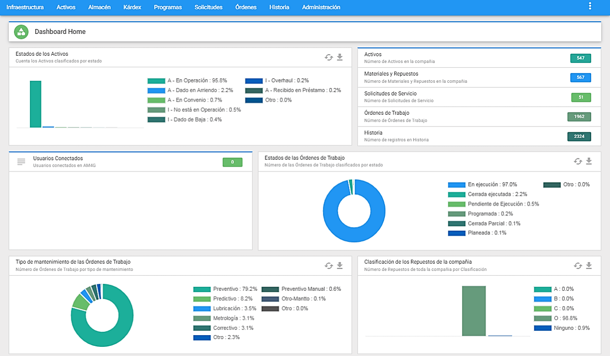
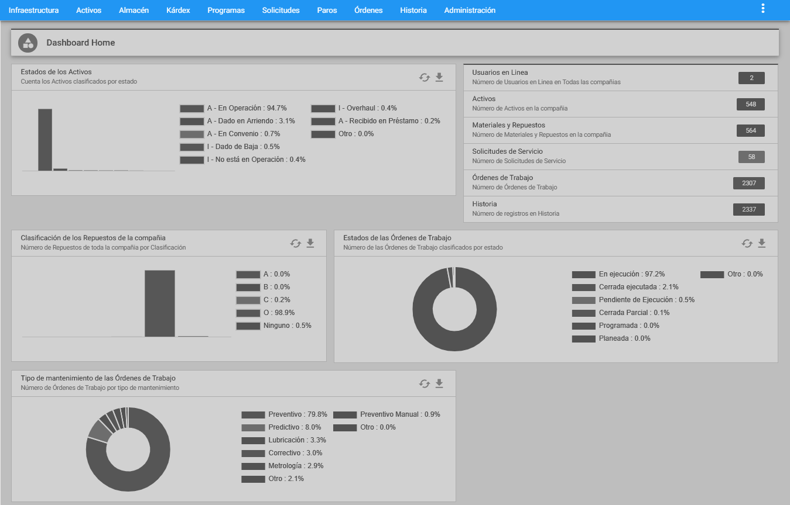
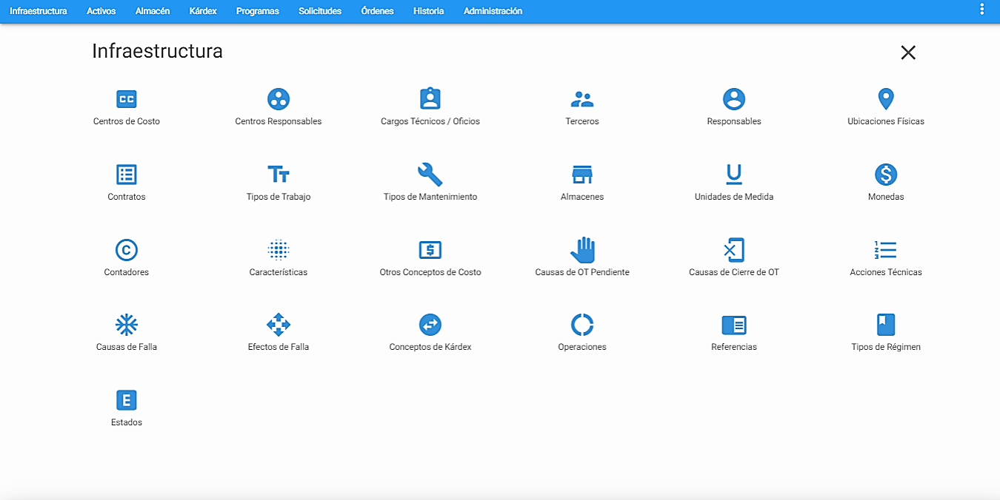
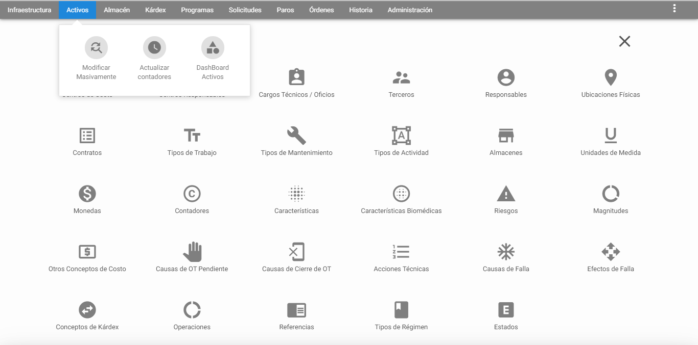
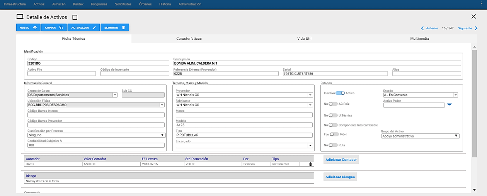
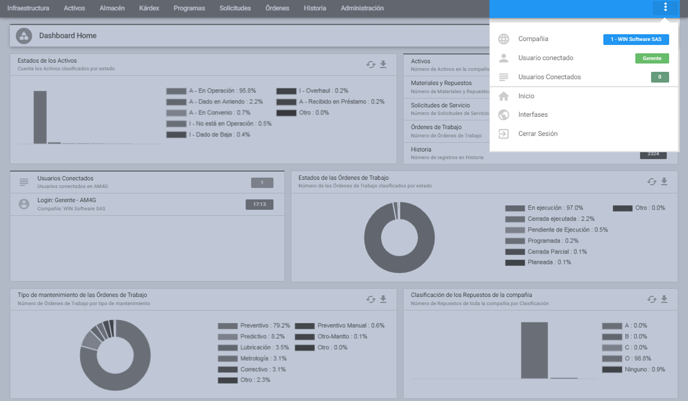
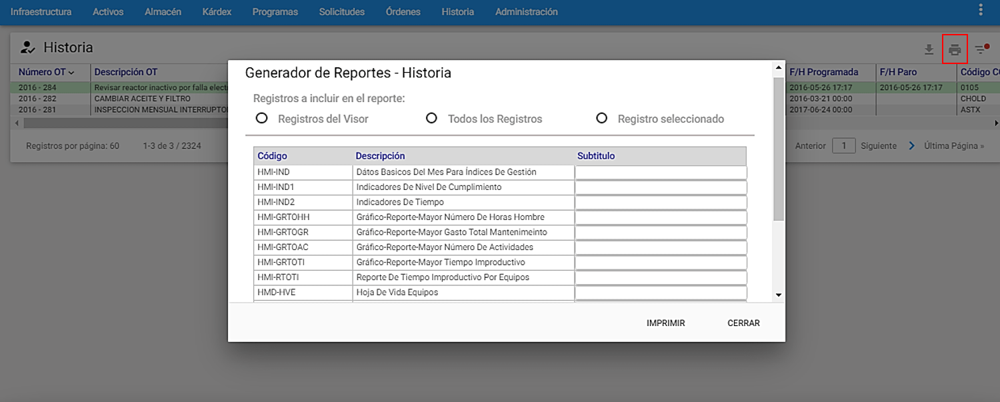
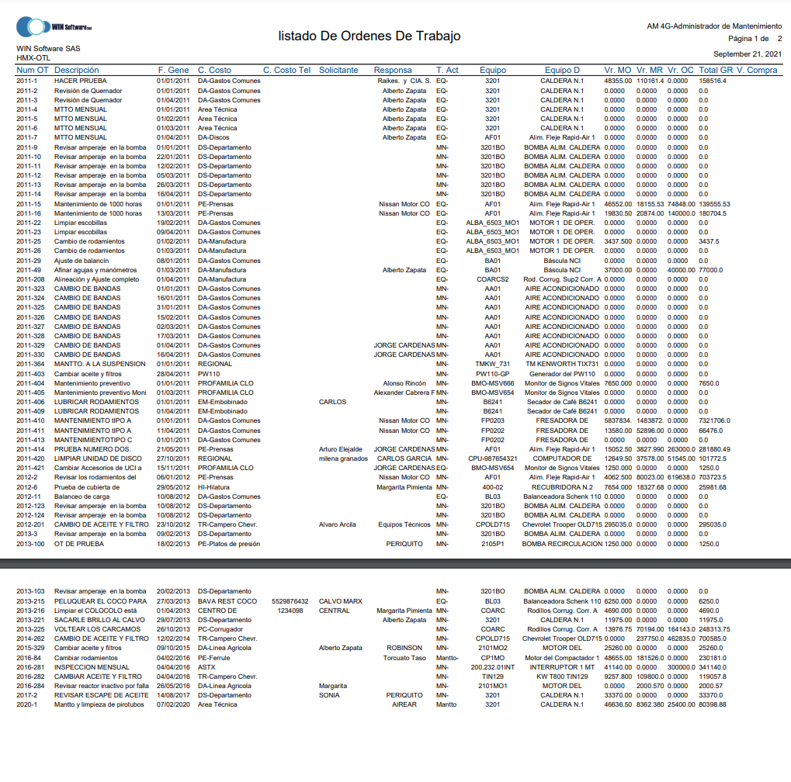
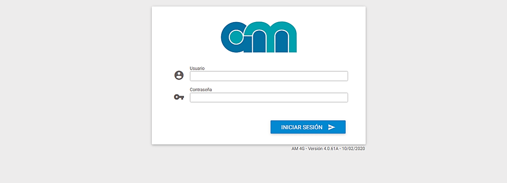

Ventana Principal AM

Aquí se incluye información general sobre los principales elementos presentes en una ventana de AM. Los elementos que conforman esta vista principal son:
Menú Principal
La porción de Menú Principal normalmente está conformada por la barra de opciones que se muestra a continuación.

En caso de estar trabajando en Infraestructura, se muestra una ventana que se ubica debajo de ella y que detalla los nombres de cada una de las tablas de la Infraestructura. A través de ellas se posibilita el acceso directo al módulo.

En caso de estar trabajando en Admón., esta barra se complementa listando todas las compañías existentes.

Submenú
El submenú tiene un conjunto de transacciones que se usan para ejecutar funciones, operaciones o procedimientos especiales que afectan uno, varios o todos los registros del módulo activo. Al sobreponer el mouse por un módulo o una opción del menú principal la pantalla muestra debajo de ella un recuadro conformado en general así, como se muestra a continuación:

Se destacan las siguientes características:

Identificación del módulo actual en pantalla, (En letra amarilla sobre fondo oscuro)corresponde a la opción del menú seleccionada.
Botón de subgrupo, (Sobre fondo verde) abre la ventana subgrupo en el espacio de la ventana detalle. En la ventana subgrupo se definen los filtros e ingresan los valores respectivos sobre los cuales se hace una preselección de datos, cuyo resultado aparece en la ventana visor.
Tres secciones de opciones, a manera de grupos de funciones o procedimientos:
Vistas Parciales: Para visualizar porciones específicas de datos del módulo activo, módulo que depende de la opción del menú principal seleccionada.
Transacciones: Para ejecutar funciones, operaciones o procedimientos especiales que afectan uno, varios o todos los registros del módulo activo.
Servicios: Para la generación de reportes y el manejo de la sesión del usuario actual.
Ventana Visor

Es la ventana en la que se lista el total de los registros o aquellos preseleccionados, del módulo activo. Para facilitar su recorrido es posible realizar desplazamientos verticales del cursor tanto hacia el comienzo como hacia el final de la tabla, y desplazamientos horizontales de izquierda a derecha y viceversa.
Los títulos en azul que encabezan las columnas son también botones que permiten ordenar la tabla, según el título seleccionado.
Para elegir un registro de la tabla se da un clic del mouse sobre él o se desplaza el cursor con las teclas de desplazamiento.
En la parte superior izquierda de esta ventana se observa la identificación actual del módulo en pantalla que corresponde a la opción del menú seleccionada. También, al lado derecho de esta sección, se encuentra el botón Nuevo con el fin de acceder rápidamente a la ventana Detalle con el fin de ingresar un nuevo registro.
En la parte superior derecha se encuentra un conjunto de transacciones de la ventana Visor del módulo seleccionado, para ejecutar funciones, operaciones o procedimientos especiales que afectan uno, varios o todos los registros del módulo activo. Este conjunto de transacciones varía dependiendo del módulo seleccionado.
En la parte inferior izquierda de esta ventana se encuentra el número de registros por página que se quieren visualizar, además de la cantidad de registros totales que conforman la tabla. Como guía existe un indicador a modo de fracción (N/M) que indica el número de registros por página de un total de registros seleccionados (N) sobre el número de registros totales en el módulo (M).
Es por lo anterior que esta fracción se verá afectada al realizarse un “Subgrupo” o filtro en el módulo seleccionado, por lo cual se muestra la cantidad de registros del subgrupo actual en la ventana Visor (N) y el total de registros existentes en el módulo activo (M). Si no hay preselección, los dos números en sus totales son los mismos.
Nota: Es posible configurar el número de registros que conforman una página desde el módulo de Administración, en la opción del submenú ** “Valores por defecto”**.
En la parte inferior derecha de esta ventana se observan también varios enlaces para navegar avanzando y retrocediendo páginas completas de registros. Como guía existe un indicador sobre la página relativa actual y la posibilidad de ingresar a la primer o última página, sin importar la página en la que se encuentre.
Ventana detalle

Es la porción de la pantalla en que se muestran los datos detallados del registro seleccionado en la ventana Visor. También, se visualiza un conjunto de Vistas Parciales o Pestañas, que se usan para visualizar porciones específicas de datos del módulo activo, módulo que depende de la opción del menú principal seleccionada. Para visualizar la información completa del registro seleccionado y facilitar su recorrido es posible realizar desplazamientos verticales del cursor tanto hacia el comienzo como hacia el final de la tabla.
Además de la información detallada de un registro, contiene un grupo de botones, que son estándares para la mayoría de las ventanas Detalle. Son ellos el botón de Nuevo,Copiar,Actualizar y nar; que siempre están en la parte superior izquierda de la ventana.
El botón Nuevo prepara la ventana Detalle para el ingreso de un nuevo registro,blanqueando cada uno de los campos que son objeto de llenado, al crearlo. Al activar el botón Nuevo, el sistema reemplaza la línea de 4 botones por una nueva de 2 botones:
Insertar y Cancelar; El botón Insertar ingresa el nuevo registro a la base de datos actualizando la ventana Visor, mientras que el botón Insertar y Cancelar; El botón Insertar ingresa el nuevo registro a la base de datos actualizando la ventana Visor, mientras que el botón Cancelar aborta el proceso de creación del nuevo registro retornando a la ventana Detalle.
Cancelar aborta el proceso de creación del nuevo registro retornando a la ventana Detalle.
El botón Copiar toma una foto o copia instantánea del registro actual, señalado por el cursor en la ventana Visor, y la deja disponible en la ventana Detalle para que sobre ella se hagan las modificaciones necesarias para crear un nuevo registro. Tales modificaciones involucran en la mayoría de los casos aquellos campos clave del registro y otros propios que deben ser particularizados para el nuevo. Al activar el botón Copiar, el sistema reemplaza la línea de 4 botones por una nueva de 2 botones: Insertar y Cancelar.
El botón Insertar ingresa el registro modificado a la base de datos actualizando la ventanaVisor, mientras que el botón Cancelar aborta el proceso de creación del nuevo registro, a partir de una copia, retornando a la ventana Detalle.
El botón Actualizar sirve para guardar o salvar en la base de datos la información que se ha modificado en la ventana Detalle, correspondiente al registro señalado por el cursor en la ventana Visor y registrar allí simultáneamente el mismo cambio.
El botón Eliminar se utiliza para borrar un registro de la base de datos y registrar simultáneamente el cambio en la ventana Visor.
En la parte superior izquierda de esta ventana se observa la identificación actual de la ventana Detalle del módulo en pantalla que corresponde a la opción del menú seleccionada, adicional, el cuadro de chequeo (checkbox) que está ubicado al lado derecho de esta sección,permite habilitarlo para que al finalizar una transacción de inserción, actualización o eliminación, la ventana Detalle permanezca en esta vista.
En la parte superior derecha de esta ventana se observan dos enlaces para navegar avanzando y retrocediendo entre registros. Como guía existe un indicador a modo de fracción que indica el número del registro actual en el que se está posicionado sobre el número deregistros totales en el módulo.
Para salir de la ventana Detalle se puede dar clic a la X que se encuentra arriba de los enlaces de navegación, o dar clic por fuera de la ventana Detalle. Ambos, llevan a la ventana Visor.
Ventana Menú de Más Información

Esta ventana se ubica en la parte superior derecha del menú principal, Contiene cinco tipos de información: Primero, indica al usuario el número y nombre de la compañía en la que se encuentra.
Segundo, indica el login del usuario conectado en la compañía y en la sección de ** “Usuarios Conectados”** que es un contador de los usuarios conectados actualmente al sistema, que, al ser activado con un clic, los despliega e indica al usuario a través de qué aplicativos están conectados.
Tercero, al dar a la opción de ** “Inicio”** lleva al usuario a la Ventana Principal de AM, cuarto la opción de “Interfases” se usará para definir los criterios de las interfaces que se realizarán a futuro entre el software AM y otros sistemas propios de la empresa o institución.
Por último, la quinta opción ** “Cerrar Sesión”** se usa para manejar la sesión del usuario actual, con el fin de salir del aplicativo**.
Ventana Reportes

Esta ventana presenta las opciones de impresión de reportes escritos relacionados con cada módulo del sistema. A esta ventana se llega dando clic al icono de la impresora que se encuentra ubicado en la parte superior derecha de la ventana Visor del módulo seleccionado.
Lista de Selección: Es la tabla donde aparecen los campos: Código, Descripción y Subtítulo. Bajo el título Código se listan los códigos de los reportes existentes. Bajo el título Descripción se listan los nombres de los reportes existentes. Bajo el título de Subtítulo se lista en algunos reportes, una descripción adicional del reporte.
Todos los Registros: Con esta opción se permite la impresión de todos los Registros existentes en la base de datos, relacionados con el módulo actual, sin importar si se ha realizado un subgrupo. Corresponde al número de registros especificados en el denominador de la selección (M).
Registros del Visor: Esta opción permite hacer una impresión de todos aquellos registros que están seleccionados en el subgrupo actual. Corresponde al número de registros especificados en el numerador de la selección (N).
Registro Seleccionado: Esta opción permite hacer una impresión del registro que está seleccionado en la Ventana Visor, mediante el cursor con la línea verde.
Subtítulo: Este campo permite registrar un poco menos de una línea de información, tipo documentación del Reporte, para que se imprima bajo el área de títulos estándar.
Después de seleccionar el tipo de registro, se procede a seleccionar el Reporte que se desea imprimir, para esto se debe pulsar el botón Imprimir, de esta manera se abre una ventana visor para formatos PDF, que muestra el Reporte seleccionado. Desde esta ventana es posible guardar el reporte y exportarlo a Excel.

Al dar clic al botón Exportar permite exportar el Reporte seleccionado sin necesidad de imprimirlo. Mientras que, al dar clic al botón Cerrar se cierra la ventana de la generación de reportes.
Otros elementos de la Interfaz de Usuario
Los Botones
Aceptar con este botón se salva o graba el registro de datos que se acaba de Ingresar.
Cancelar con este botón se cancela cualquier transacción que se esté realizando.
Actualizar con este botón se salva el registro de datos que se acaba de modificar.
Copiar con este botón se copian los datos del registro activo en pantalla, dejando el nuevo registro listo para ser modificado e insertado.
Nuevo este botón inicializa todos los campos para proceder a ingresar un nuevo registro en cualquier módulo de la Base de Datos.
Insertar almacena los datos del registro que se acaba de copiar o de crear.
Eliminarborra el registro que se encuentra activo en pantalla, siempre y cuando no tenga vínculos y/o asociaciones Normalmente aparece un mensaje para confirmar la eliminación.
Cancelar Con este botón se cancela cualquier transacción que se esté realizando**.
Aprobar Presupuesto Este botón se encuentra en el módulo de OT mientras no se haya aprobado el presupuesto de una OT que exige presupuesto. Permite aprobar el presupuesto que ha sido asignado a una OT. Una vez aprobado , es posible iniciar el registro manual del Gasto Real.
Mano Obra Interna Este botón se encuentra en la opción Presupuesto (en OT y PM) y en Gasto Real (OT e HI). Permite ver el detalle de la Mano de Obra Interna presupuestada o usada, respectivamente.
Mano Obra Externa Este botón se encuentra en la opción Presupuesto (en OT y PM) y en Gasto Real (OT e HI). Permite ver el detalle de la Mano de Obra Externa presupuestada o usada, respectivamente.*
Materiales y Repuestos este botón se encuentra en la opción Presupuesto (en OT y PM) y en Gasto Real (OT e HI). Permite ver el detalle de los Materiales y Repuestos.
Otros ConceptosEste botón se encuentra en la opción Presupuesto (en OT y PM) y en Gasto Real (OT e HI). Permite ver el detalle de los Otros Conceptos de Costos.
Ir a Matriz Eeste botón regresa a la vista de matriz de Presupuesto o gasto real en HI, OT y PM, después de visualizar, ingresar o modificar información detallada de algún concepto de costo.
Adicionar Mano Obra Interna este botón se encuentra en la opción Presupuesto (en OT y PM) y en Gasto Real (OT e HI). Permite ingresar el detalle de la Mano de Obra Interna presupuestada o usada, respectivamente.
Adicionar Mano Obra Externaeste botón se encuentra en la opción Presupuesto (en OT y PM) y en Gasto Real (OT e HI). Permite ingresar el detalle de la Mano de Obra Externa presupuestada o usada, respectivamente.
Adicionar Material de repuesto Este botón se encuentra en la opción Presupuesto (en OT y PM) y en Gasto Real (OT e HI). Permite ingresar el detalle de los Materiales y Repuestos.
Adicionar Otro Concepto este botón se encuentra en la opción Presupuesto (en OT y PM) y en Gasto Real (OT e HI). Permite ingresar el detalle de los Otros Conceptos de Costos.
Asociar Botón utilizado para registrar la relación entre Activos y sus Repuestos.
Desasociar En Almacén de Repuestos RP, permite desasociar uno o varios Activos a uno o varios de sus Repuestos asociados.
Agregar Este botón permite adicionar información al registro actual.
Cancelar Este botón permite Cancelar la acción que se está ejecutando. Normalmente aparece un mensaje para confirmar la cancelación.
Cerrar Con este botón se cierra la ventana de generación de reportes y regresa a la ventana en proceso.
Exportar Este botón permite Exportar los datos qué se encuentran en el visor, a un formato de Excel.
Imprimir Este botón genera el reporte seleccionado en una nueva ventana. Refiérase a Servicios/ Reportes en la ventana submenú de cada módulo del sistema.
Iniciar Sesión este botón valida el usuario y la contraseña, necesarios para ingresar al AM.
Enviar a Historia Este botón ejecuta el envío de registros de SS, OT, PA con estado cerradas y/o canceladas, hasta el módulo de Historia de Mantenimiento.
Proyectar Inicia el proceso de proyección en PM, con el objetivo de planear y/o presupuestar un periodo de largo plazo, a partir de los PM activos.
Generar Este botón convierte en OT reales, aquellas Os que fueron resultado del proceso de Analizar que se acaba de ejecutar, en el módulo de OT.
Modificar FIP En Programas de Mantenimiento, actualiza el valor de la Fecha de Inicio de Período.
Buscar Abre una nueva ventana compuesta (Ventana Visor y Ventana Subgrupo) para realizar una selección que facilite la búsqueda de un registro.
Más Este botón permite hacer unión de selecciones dentro de una opción de subgrupo en una Ventana Visor. Es útil cuando se necesita visualizar conjuntamente dos o más subgrupos.
Menos Este botón permite hacer substracción de un subconjunto desde una selección previa, de subgrupo en una Ventana Visor.
Valores Por Defecto Valores Por Defecto este botón desmarca todos los criterios de selección en un subgrupo, para iniciar la conformación de otro subgrupo con un nuevo conjunto de criterios o filtros.
todos adicionan Con este botón se realiza el subgrupo o filtro de acuerdo a los criterios de selección.
Todos Reemplazan activa la función de sumar los nuevos valores a los anteriores en el proceso de actualizar contadores de AC.
Cargar con este botón se realiza la búsqueda de un anexo, documento, imagen, video, entre otros; que será cargado en la pestaña de Multimedia disponible en varios módulos.
Subir Archivo con este botón se realiza la carga de un anexo, documento, imagen, video, entre otros; en las opciones de Multimedia disponible en varios módulos.
Ver Diagrama Con este botón se visualiza en un Diagrama de Gantt, la proyección de los PM activos en el módulo de PM o el listado de las OT analizadas en el módulo de ÓT.
Ver Reportes Con este botón se visualiza el listado de los Reportes disponibles en PM y OT, como resultado de los procesos de proyección o analizar, respectivamente.
Ver RP Asociados con este botón se visualiza la asociación de uno o varios Repuestos a un Activo, en el módulo de Almacén de Repuestos.
Ver AC Asociados Con este botón se visualiza la asociación de uno o varios Activos a un Repuesto, en el módulo de Almacén de Repuestos.
Navegador entre páginas con este botón se puede navegar avanzando y retrocediendo páginas completas de registros.
Ir A Con este botón se puede buscar un Activo digitando exactamente el código del Activo definido en el módulo de Activos.
Cambiar a Regid Con este botón se pueden visualizar los Activos que están en el módulo o en un subgrupo en una vista de árbol, en la que se parte de las Ubicaciones Físicas, y luego se ven los Activos pertenecientes a esa Ubicación Física y su Despiece.
descargar Con este botón se puede descargar cualquier campo del módulo seleccionado a Excel.
Generador de Reportes Con este botón se permite ingresar al listado de Reportes disponibles en el módulo seleccionado.
Indicadores con este botón se muestra el significado de los colores mostrados en la columna de Indicadores de los módulos de Infraestructura, Activos, Almacén de Repuestos, PM, SS, PA, OT e HI.
Iniciar la ejecución de AM
La ejecución del – AM se inicia activando el link correspondiente a través de un navegador como Chrome o Mozilla.
Si se trata de la versión AM PRO, el sistema solicita el nombre de usuario, la selección de la Compañía con la cual desea interactuar y su clave de acceso.
Cuando se trata de la versión AM ST el sistema solicita el nombre de usuario y su clave de acceso.
Cuando se ha hecho el acceso exitoso al sistema se muestra por defecto una ventana con un tablero de entrada que corresponde a un DashBoard Home que permite visualizar conjuntos de indicadores e información que muestran la forma actual de las cosas en distintos módulos del sistema.

También es posible definir que al ingresar al sistema se muestre la tabla de Terceros de la Infraestructura, en lugar del Dashboard Home, esto se define desde el módulo de Administración. Posteriormente, en el capítulo de Administración, se trata más a fondo esta opción del sistema.